Actual direct Issues captures
Six focused baseline captures and all sixteen new candidate captures.
Evidence and limits
baseline: 145-direct-issues-row__dark__480dip__fr-FR__display1__144dpi.png

baseline: 145-direct-issues-row__dark__480dip__fr-FR__display2__96dpi.png

baseline: 146-diagnostic-counters-no-issues-row__dark__480dip__fr-FR__display1__144dpi.png
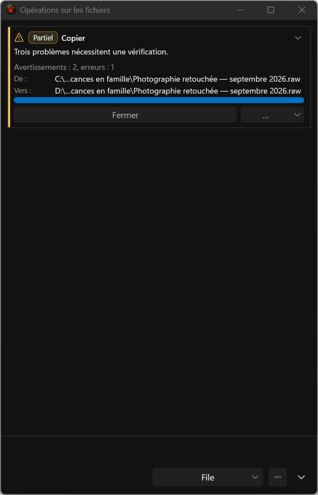
baseline: 146-diagnostic-counters-no-issues-row__dark__480dip__fr-FR__display2__96dpi.png
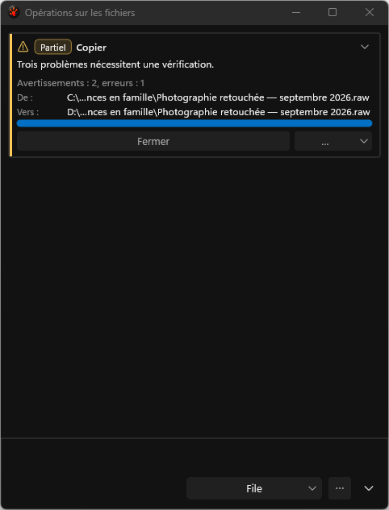
baseline: 147-clean-no-issues__dark__480dip__fr-FR__display1__144dpi.png
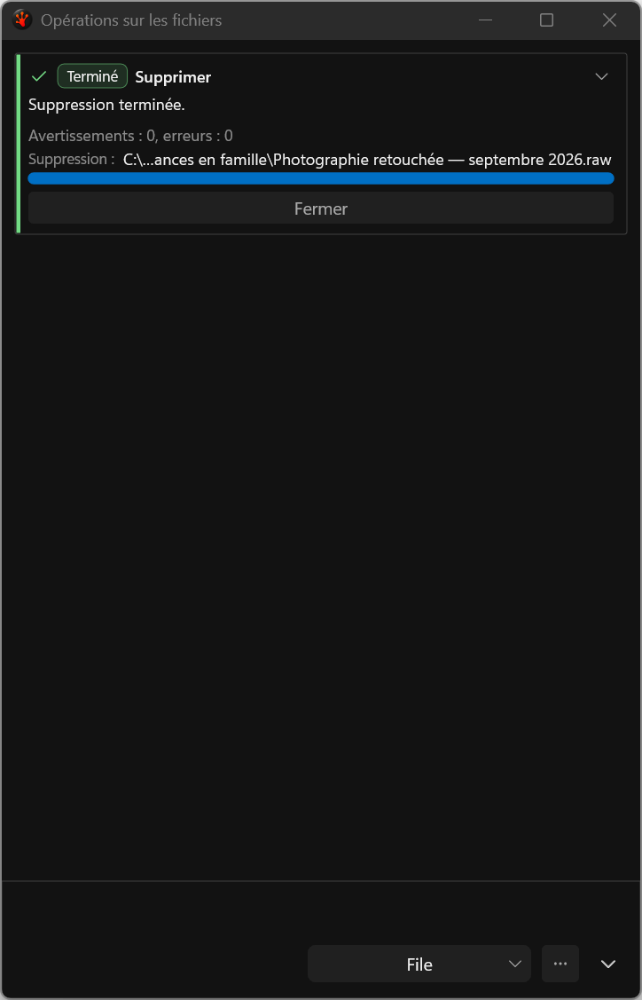
baseline: 147-clean-no-issues__dark__480dip__fr-FR__display2__96dpi.png
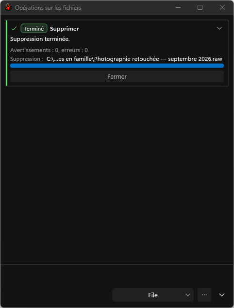
candidate: 145-direct-issues-row__dark__480dip__fr-FR__display1__144dpi.png

candidate: 145-direct-issues-row__dark__480dip__fr-FR__display2__96dpi.png
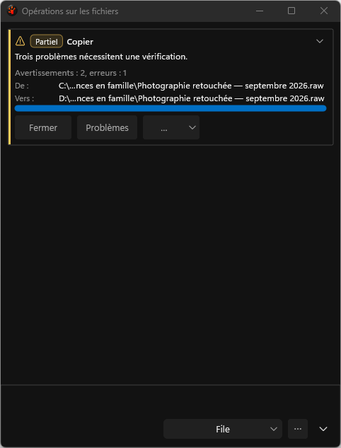
candidate: 146-diagnostic-counters-no-issues-row__dark__480dip__fr-FR__display1__144dpi.png

candidate: 146-diagnostic-counters-no-issues-row__dark__480dip__fr-FR__display2__96dpi.png

candidate: 147-clean-no-issues__dark__480dip__fr-FR__display1__144dpi.png
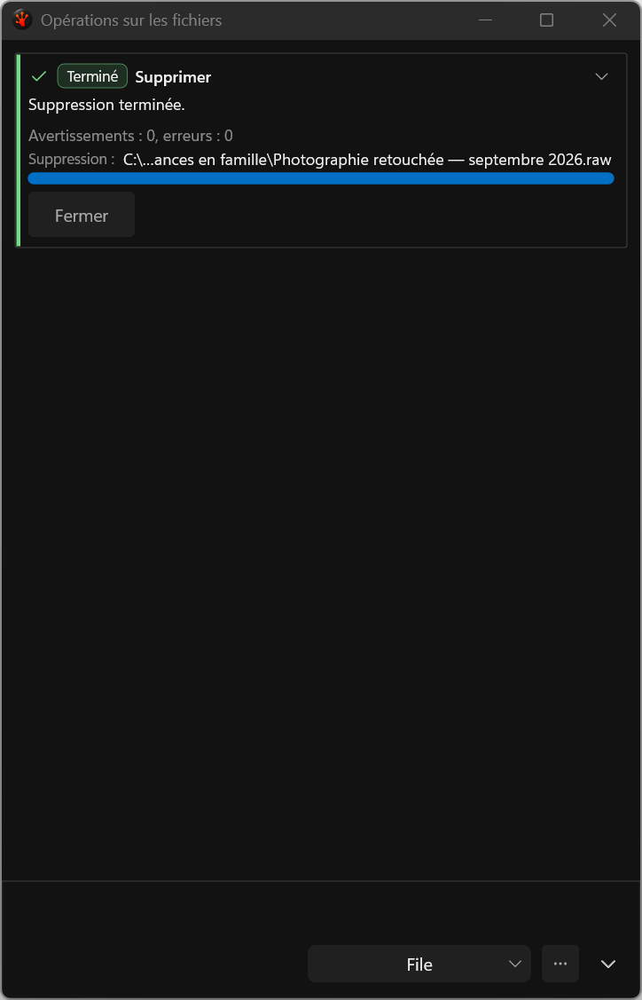
candidate: 147-clean-no-issues__dark__480dip__fr-FR__display2__96dpi.png
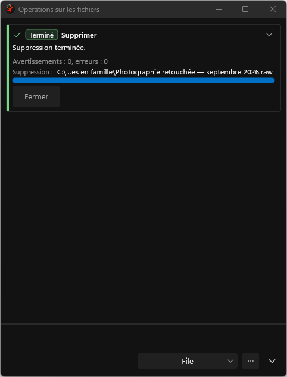
candidate: 145-direct-issues-row__dark__760dip__fr-FR__display1__144dpi.png
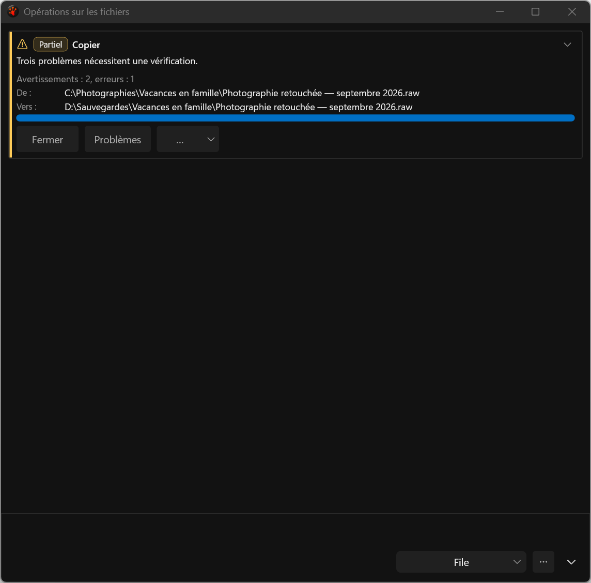
candidate: 145-direct-issues-row__dark__760dip__fr-FR__display2__96dpi.png

candidate: 145-direct-issues-row__high-contrast__480dip__fr-FR__display1__144dpi.png
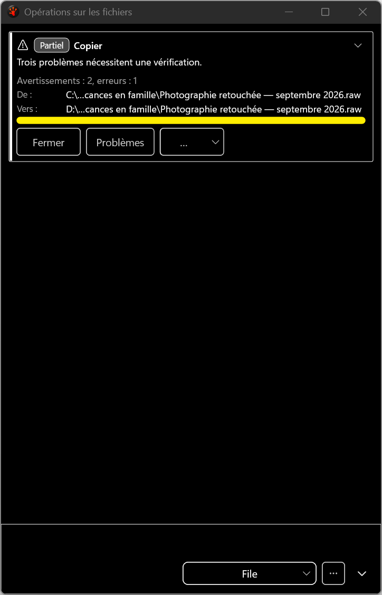
candidate: 145-direct-issues-row__high-contrast__480dip__fr-FR__display2__96dpi.png
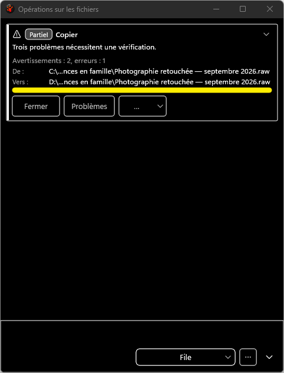
candidate: 145-direct-issues-row__high-contrast__760dip__fr-FR__display1__144dpi.png

candidate: 145-direct-issues-row__high-contrast__760dip__fr-FR__display2__96dpi.png
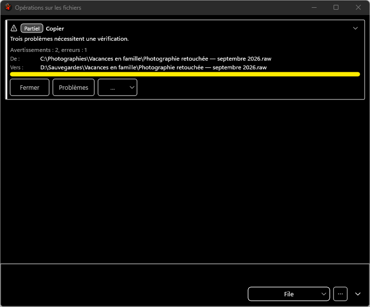
candidate: 146-diagnostic-counters-no-issues-row__dark__760dip__fr-FR__display1__144dpi.png
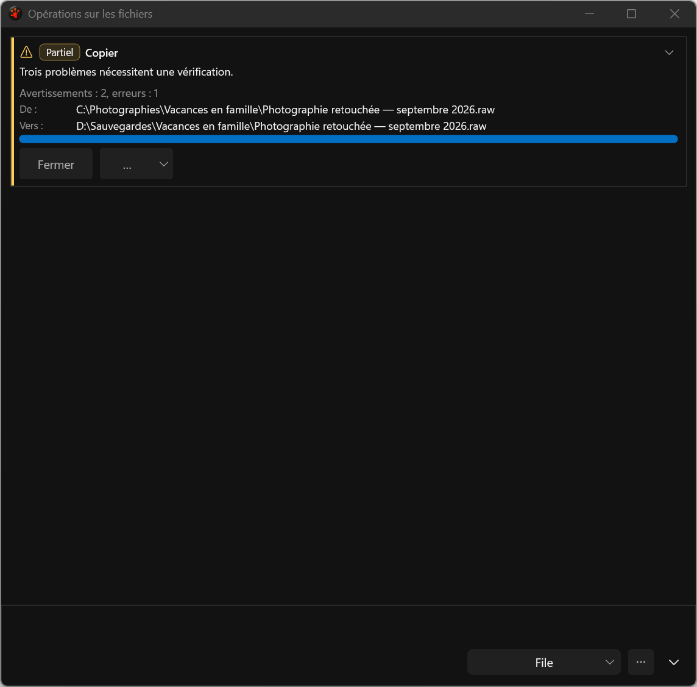
candidate: 146-diagnostic-counters-no-issues-row__dark__760dip__fr-FR__display2__96dpi.png
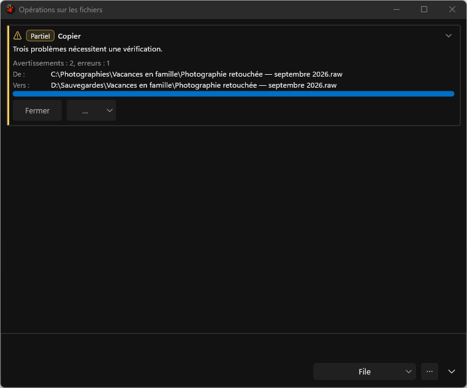
candidate: 147-clean-no-issues__dark__760dip__fr-FR__display1__144dpi.png

candidate: 147-clean-no-issues__dark__760dip__fr-FR__display2__96dpi.png
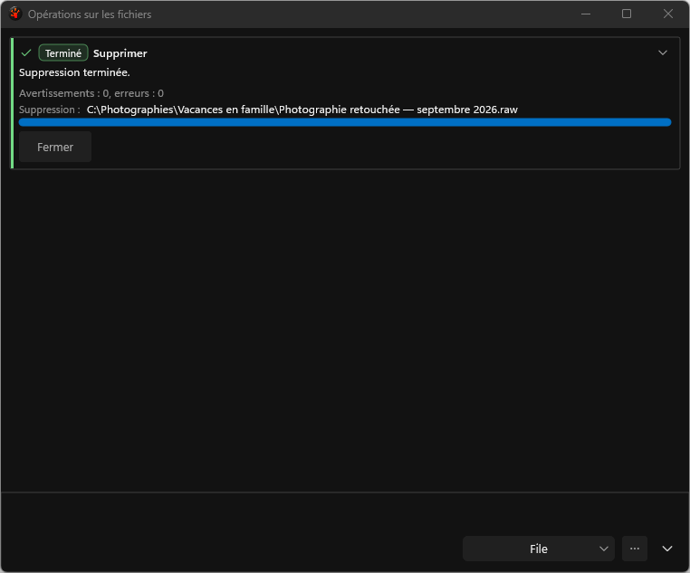